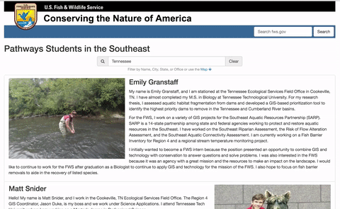
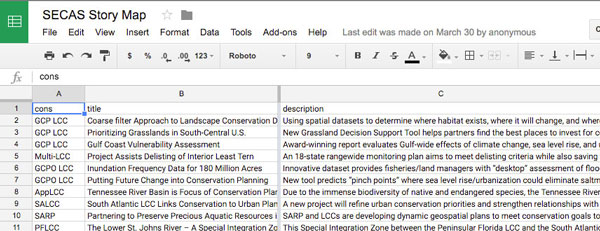
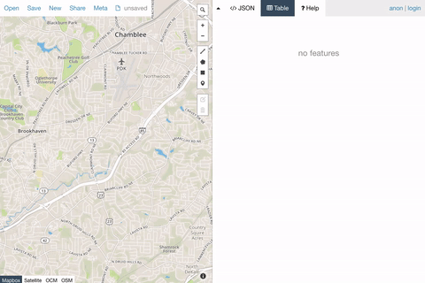
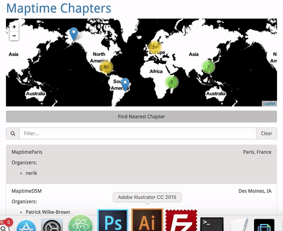
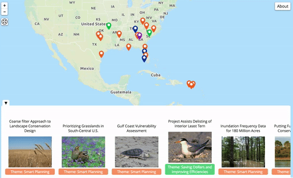

Story Maps
Using Maps to Craft User Interfaces
April 19th, 2016
Athens, GA

Roy Hewitt
Job: Regional Web Developer
Background: Biology, GIS
Agenda
- What are Story Maps all about?
- How do I make a Story Map?
- What tools are out there?
- Show me the dang examples!
What is a Story Map?
“Story maps use geography as a means of organizing and presenting information. They tell the story of a place, event, issue, trend, or pattern in a geographic context. They combine interactive maps with other rich content—text, photos, video, and audio—within user experiences that are basic and intuitive.”— ESRI, emphasis is mine.
Why Build a Story Map?
- Where matters; nothing happens in a vacuum
- Wrap an analysis in context for lay audiences
- Engage new audiences
What Makes a Good Story Map?
- Know your audience
- Write in plain language
- Know what’s important
- A good user experience
Hack your Maps
“Have you ever taken apart a map? Worked with a map as a critical part of your design?” - Young Hahn, ‘Hack Your Maps’
Know What's Important
If you're making a story map to share photos from a trip ensure the size of the photos is relative to their importance. It doesn't make sense to have a full screen map with tiny thumbnail images.
User Experience
User experience (UX) focuses on having a deep understanding of users, what they need, what they value, their abilities, and also their limitations. —usability.gov
It better be Easy
Poor UX
Having scroll-to-zoom enabled on a scroll driven page

Poor UX
Small click targets
Poor UX
How do you hover with your finger?

Photo: Kārlis Dambrāns CC BY 2.0
The Path to Story Map Mastery
- Pre-built templates with point and click interface
- Build upon open source templates to customize the experience
- Code your story maps from scratch
Pre-built Templates

ESRI provides a series of pre-built templates that you can fill with your own content
Open Source Templates

ESRI provides about a dozen open source templates on their GitHub page. This option allows you to dive into the code and change anything and everything.
Coding your Maps from Scratch

Highest level of difficulty, but limitless options for creativity.
Data Creation/Collection
Google Spreadsheets
Collaborate on application data as a spreadsheet. When you're ready to use the data download as a CSV file.
geojson.io
geojson.io is a great tool if you need to create point line or polygon features including attribute data directly on a map
How to Handle Data
Generally you can make your data available as a service (WMS, WFS, etc.) or as a text file (geojson, geobuf, csv).
Feature Data
Lends itself towards text files. Easy to maintain, store right along side your project. User interactions (clicks, scrolls, etc.) can give you all of the associated attribute data to use in pop-ups, infowindows, banners.
Rasters
Lends itself to web services. This is a great option if the product of your analysis is a continuous surface and you're less interested in click interactions. Use ScienceBase or ArcGIS Online to create these services.
Techniques
Filter a list using a map.
Filter large datasets on pan/zoom

Display supplemental information in response to user interaction.
Zoom to a location to give a sense of distance and direction (don't over do it!)

Challenges
Can't Ignore Mobile
According to SimilarWeb’s State of Mobile Web US 2015 report, roughly 56 percent of consumer traffic to the leading US websites is now from mobile devices.
Responsive Web Design
Adapting web content based on the available screen realestate for phones, widescreens and everything in between through fluid layouts.

Photo: Responsive design CC BY-SA 2.0
Accessibility
How do non-sighted, motor impaired users navigate?
Use of tab index, Accessible Rich Internet Applications (ARIA)

Photo: Australian Paralympic Committee CC BY-SA 3.0
Performance
Forget the kitchen sink. 1 out of 4 customers will abandon a webpage that takes more than 4 seconds to load. - emarketer